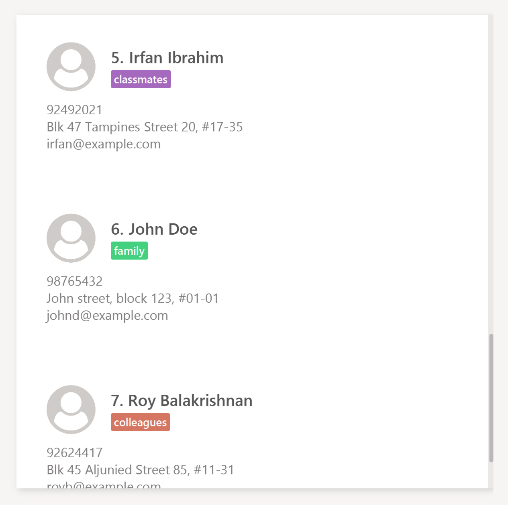
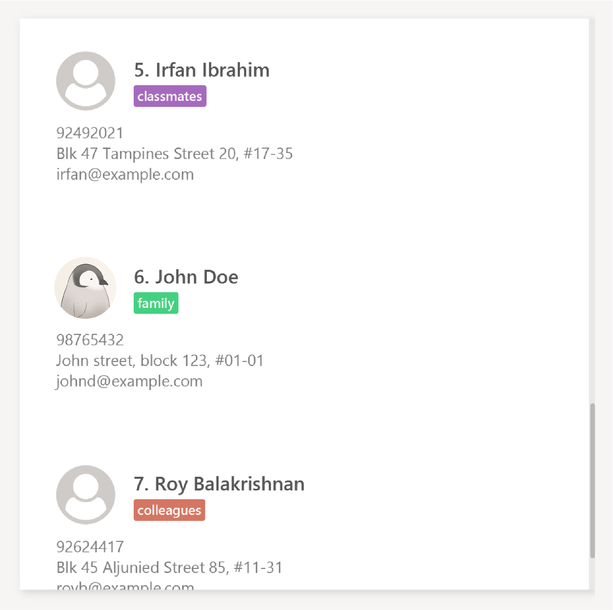

By: Team Rolodex Since: Sep 2017 Licence: MIT
- 1. Quick Start
- 2. Features
- 2.1. Viewing help :
help,h,assistorfaq - 2.2. Adding a person:
add,aor+ - 2.3. Listing all persons :
list,l,showordisplay - 2.4. Editing a person :
edit,e,changeormodify - 2.5. Locating persons in Rolodex:
find,f,filterorsearch - 2.6. Deleting a person :
delete,dor- - 2.7. Selecting a person :
selectors - 2.8. Adding a note:
noteorn(Coming in V2.0) - 2.9. Adding a profile picture:
pictureorpic(Coming in V2.0) - 2.10. Listing entered commands :
history,hisorpast - 2.11. Undoing previous command :
undooru - 2.12. Redoing the previously undone command :
redoorr - 2.13. Clearing all entries :
clearorc - 2.14. Opening an existing Rolodex storage file:
open,o,cd,ls,< - 2.15. Creating a new Rolodex storage file:
new,n,touchor> - 2.16. Exiting the program :
exit,quit,close,bye,esc - 2.17. Saving the data
- 2.18. Keyboard Shortcuts
- 2.1. Viewing help :
- 3. FAQ
- 4. Command Summary
- 5. Keyboard Shortcuts
1. Quick Start
-
Ensure you have Java version
1.8.0_60or later installed in your Computer.Having any Java 8 version is not enough.
This app will not work with earlier versions of Java 8. -
Download the latest
rolodex.jarhere. -
Copy the file to the folder you want to use as the home folder for your Rolodex.
-
Double-click the file to start the app. The GUI should appear in a few seconds.

-
Type the command (case insensitive) in the command box and press Enter to execute it.
e.g. typinghelpand pressing Enter will open the help window. -
Some example commands you can try:
-
list: lists all contacts -
addn/John Doe p/98765432 e/johnd@example.com a/John street, block 123, #01-01: adds a contact namedJohn Doeto Rolodex. -
delete3: deletes the 3rd contact shown in the current list -
exit: exits the app
-
-
Refer to the Features section below for details of each command.
2. Features
Command Format
-
Words in
UPPER_CASEare the parameters to be supplied by the user e.g. inadd n/NAME,NAMEis a parameter which can be used asadd n/John Doe. -
Items in square brackets are optional e.g
n/NAME [t/TAG]can be used asn/John Doe t/friendor asn/John Doe. -
Items with
… after them can be used multiple times including zero times e.g.[t/TAG]…can be used ast/friend,t/friend t/familyetc. -
Parameters can be in any order e.g. if the command specifies
n/NAME p/PHONE_NUMBER,p/PHONE_NUMBER n/NAMEis also acceptable.
2.1. Viewing help : help, h, assist or faq
Format: help or h
Keyboard shortcut: F1
2.2. Adding a person: add, a or +
Adds a person to Rolodex
Format: add n/NAME p/PHONE_NUMBER e/EMAIL a/ADDRESS [t/TAG]…
or a n/NAME p/PHONE_NUMBER e/EMAIL a/ADDRESS [t/TAG]…
(press TAB after typing add for auto-completion)
| A person can have any number of tags (including 0) |
Examples:
-
add n/John Doe p/98765432 e/johnd@example.com a/John street, block 123, #01-01 -
a n/Betsy Crowe t/friend e/betsycrowe@example.com a/Newgate Prison p/1234567 t/criminal
2.3. Listing all persons : list, l, show or display
Shows a list of all persons in Rolodex, sorted by the specified sort order or default sort order.
Format: list [SORT_ARGUMENTS] or l [SORT_ARGUMENTS]
Keyboard shortcut: Ctrl+L
Examples:
-
listorldisplays all persons by the default sort order. -
l n/descdisplays all persons sorted by descending name. -
list p/ a/descorlist p/asc a/descdisplays all persons sorted by ascending phone, then by descending address.
2.4. Editing a person : edit, e, change or modify
Edits an existing person in Rolodex.
Format: edit INDEX [n/NAME] [p/PHONE] [e/EMAIL] [a/ADDRESS] [t/TAG]…
or e INDEX [n/NAME] [p/PHONE] [e/EMAIL] [a/ADDRESS] [t/TAG]…
(press TAB after typing edit for auto-completion)
Examples:
-
edit 1 p/91234567 e/johndoe@example.com
Edits the phone number and email address of the 1st person to be91234567andjohndoe@example.comrespectively. -
e 2 n/Betsy Crower t/
Edits the name of the 2nd person to beBetsy Crowerand clears all existing tags.
2.5. Locating persons in Rolodex: find, f, filter or search
Finds persons in Rolodex.
Format: find KEYWORD [MORE_KEYWORDS] [SORT_ARGUMENTS]
or f KEYWORD [MORE_KEYWORDS] [SORT_ARGUMENTS]
or search KEYWORD [MORE_KEYWORDS] [SORT_ARGUMENTS]
(press TAB after typing find for auto-completion)
Examples:
-
find Johnorfind jhon
ReturnsjohnandJohn Doe -
search Betsy Tim John
Returns any person having namesBetsy,Tim, orJohn -
find School
Returns any person having tagSchool -
find School werk
Returns any person having tagSchoolor tagwerk
Examples:
-
find John p/orfind jhon p/asc
ReturnsjohnandJohn Doe, sorted by ascending phone number. -
search Betsy Tim John n/ p/desc
Returns any person having namesBetsy,Tim, orJohn, sorted by name then by descending phone if names are equal. -
find School a/desc
Returns any person having tagSchool, sorted by descending address. -
find School werk e/
Returns any person having tagSchoolor tagwerk, sorted by email. -
find e/ p/desc
Returns an error (do not count as search arguments).
2.6. Deleting a person : delete, d or -
Deletes the specified person from Rolodex.
Format: delete INDEX or d INDEX
(press TAB after typing delete for auto-completion)
Examples:
-
list
delete 2
Deletes the 2nd person in Rolodex. -
find Betsy
d 1
Deletes the 1st person in the results of thefindcommand.
2.7. Selecting a person : select or s
Selects the person identified by the index number used in the last person listing.
Format: select INDEX or s INDEX
(press TAB after typing select for auto-completion)
Examples:
-
list
select 2
Selects the 2nd person in Rolodex. -
find Betsy
s 1
Selects the 1st person in the results of thefindcommand.
2.8. Adding a note: note or n (Coming in V2.0)
Adds a note to the specified person in Rolodex.
Format: note INDEX [r/NOTE] or note INDEX [r/NOTE]
Examples:
-
note 1 r/Likes fishing
Sets the note of the 1st person toLikes fishing. -
n 1 r/
Removes the note for the 1st person.
2.9. Adding a profile picture: picture or pic (Coming in V2.0)
Adds a profile picture to the specified person in Rolodex.
Format: picture INDEX FILE_DIRECTORY or pic INDEX FILE_DIRECTORY
Examples:
-
picture 1 C:\Users\John\Pictures\my_pic.png
Sets the profile picture of the 1st person tomy_pic.png. -
pic 6 C:\Users\Alice\Pictures\Contacts\john.png
Sets the profile picture of the 6th person tojohn.png.
The second example is illustrated in greater detail here:
-
Before the addition of profile pictures, the contact list is loaded with the default avatar image as shown below.
 -
pic 6 C:\Users\Alice\Pictures\Contacts\john.pngis entered in the command box with the validFILE_DIRECTORY. -
If the command is entered correctly, you should see the updated profile picture as specified in the
FILE_DIRECTORYof the command.
2.10. Listing entered commands : history, his or past
Lists all the commands that you have entered in reverse chronological order.
Format: history or his or past
Keyboard shortcut: Ctrl+H
|
Pressing the ↑ and ↓ arrows will display the previous and next input respectively in the command box. |
2.11. Undoing previous command : undo or u
Restores Rolodex to the state before the previous undoable command was executed.
Format: undo or u
Keyboard Shortcut: Ctrl+Z
|
Undoable commands: those commands that modify Rolodex’s content ( |
Examples:
-
delete 1
list
undo(reverses thedelete 1command) -
select 1
list
u
Theundocommand fails as there are no undoable commands executed previously. -
delete 1
clear
undo(reverses theclearcommand)
u(reverses thedelete 1command)
2.12. Redoing the previously undone command : redo or r
Reverses the most recent undo command.
Format: redo or r
Keyboard shortcut: Ctrl+Y
Examples:
-
delete 1
undo(reverses thedelete 1command)
redo(reapplies thedelete 1command) -
delete 1
r
Theredocommand fails as there are noundocommands executed previously. -
delete 1
clear
undo(reverses theclearcommand)
undo(reverses thedelete 1command)
redo(reapplies thedelete 1command)
r(reapplies theclearcommand)
2.13. Clearing all entries : clear or c
Clears all entries from Rolodex.
Format: clear or c
Keyboard shortcut: Ctrl+Shift+D
2.14. Opening an existing Rolodex storage file: open, o, cd, ls, <
Reloads the application with data from a rolodex at the specified filepath.
Format: open FILEPATH or o FILEPATH
|
Opening a file without a .rldx extension will not save your changes. |
Examples:
-
open C:/Users/Rolodex/downloads/myOwn.rldx
o C:/Users/Rolodex/downloads/myOwn.rldx
o C:\Users\Rolodex\downloads\myOwn.rldx
Loads the application with the data at the directoryC:/Users/Rolodex/downloads/myOwn.rldx. -
open data/default.rldx
open data\default.rldx
Loads the application with the data indefault.rldxin the folderdata.
2.15. Creating a new Rolodex storage file: new, n, touch or >
Creates a new Rolodex at the specified filepath and reloads the application with new sample data.
Format: new FILEPATH or n FILEPATH
Examples:
-
new C:/Users/Rolodex/downloads/myOwn.rldx
n C:/Users/Rolodex/downloads/myOwn.rldx
n C:\Users\Rolodex\downloads\myOwn.rldx
Creates a new Rolodex filemyOwn.rldxat the directoryC:\Users\Rolodex\downloadsand reloads the application with sample data created for the new Rolodex. -
new data/default.rldx
new data\default.rldx
Creates a new Rolodex filedefault.rldxat the relative directorydataand reloads the application with sample data created for the new Rolodex.
2.16. Exiting the program : exit, quit, close, bye, esc
Exits the program.
Format: exit
Keyboard shortcut: Alt+F4
2.17. Saving the data
Rolodex’s data are saved in the hard disk automatically after any command that changes the data.
There is no need to save manually.
2.18. Keyboard Shortcuts
A list of keyboard shortcuts is provided here.
3. FAQ
Q: How do I transfer my data to another Computer?
A: Install the app in the other computer and overwrite the empty data file it creates with the file that contains the data of your previous Rolodex folder.
4. Command Summary
| Command | Format |
|---|---|
Add |
|
|
|
E.g. |
|
Clear |
|
|
|
Delete |
|
|
|
E.g. |
|
Edit |
|
|
|
E.g. |
|
Find |
|
|
|
|
|
E.g. |
|
List |
|
|
|
E.g. |
|
Help |
|
|
|
Select |
|
|
|
E.g. |
|
History |
|
|
|
|
|
Undo |
|
|
|
Redo |
|
|
5. Keyboard Shortcuts
5.1. Command Shortcuts
| Shortcut | Purpose |
|---|---|
Ctrl+L |
List all contacts |
Ctrl+H |
View history |
Ctrl+Z |
Undo last command |
Ctrl+Y |
Redo last command |
Ctrl+Shift+D |
Clear contact list |
F1 |
View help window |
5.2. Navigation/Selection Shortcuts
| Shortcut | Purpose |
|---|---|
Enter |
Select the command box |
Esc |
Deselect the command box |
When the command box is not in selection: |
|
↑ and ↓ |
Scroll the contact list |
Ctrl+D |
Delete the selected contact (Coming in V2.0) |
Alt+F4 |
Exit the application |